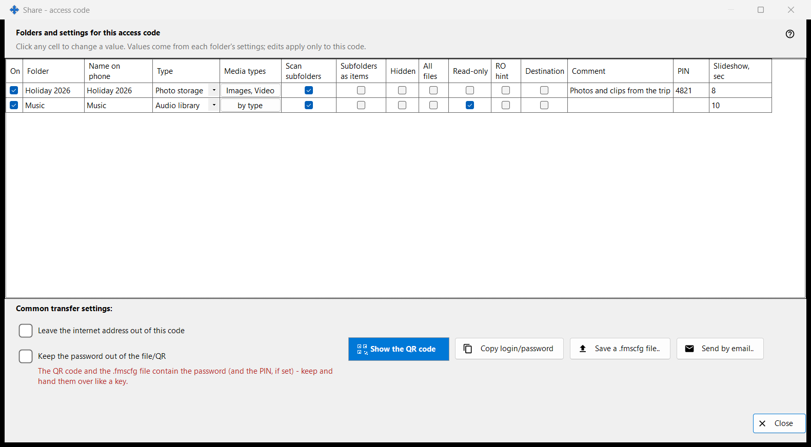
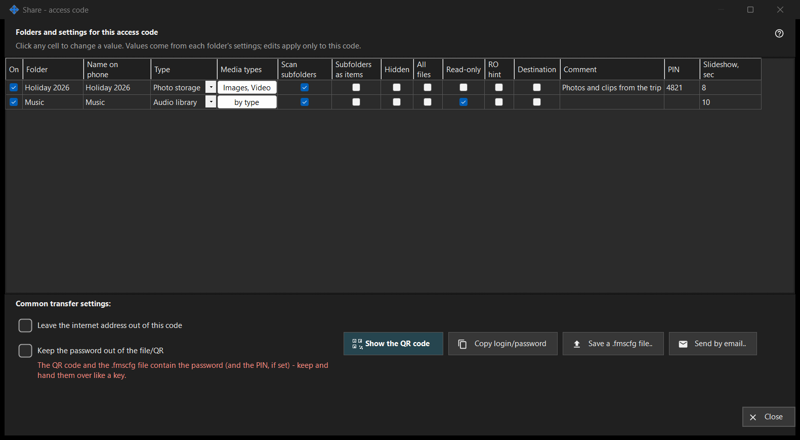

Share - access code
What this is for
Builds the access code for a phone: a QR code and a .fmscfg file that carry the address, the login and the chosen folders. It opens from the 'Share' button of the main window while sharing is on, and checks that the phone can really reach the PC before it hands the code out.


In this order
- Tick the folders to put in the code.
- Edit any cell of the grid that should differ for this code.
- Tick 'Leave the internet address out of this code' or 'Keep the password out of the file/QR' if needed.
- Wait for the access check.
- Show the QR code, save the .fmscfg file, send it by email or copy the login and password.
The elements
Folders and settings for this access code
One row per shared folder with the columns On, Folder, Name on phone, Type, Media types, Scan subfolders, Subfolders as items, Hidden, Read-only, RO hint, Destination, Comment and Slideshow, sec. Click a cell to change it. Values start from each folder's own settings and the edits apply only to this code. Read-only is a real lock on the server; RO hint only hides edit buttons in the app. A destination folder is always writable, so Read-only does not apply to it.
Common transfer settings
'Leave the internet address out of this code' makes the phone connect over the local network only; it does not switch the server off, and internet access for the whole share is closed in the manager settings. 'Keep the password out of the file/QR' removes the password from the code; pass it on separately. Whether the phone accepts a code without a password depends on the app version.
Access check
While the state is fetched the window says so. If the server is not running, or no folder is ticked, or there is no usable address, a hint says what is missing. When the check does not finish, the code and the file are not handed out: press 'Check access again'.
Show the QR code
The QR code and the .fmscfg file open access to the folders and contain the password and the PIN, if set - keep and hand them over like a key. If the settings are too large for a QR code, save the file and send it instead.
File, mail and login
'Save a .fmscfg file..' writes the file; on a file system that cannot restrict access, or in a folder others can change, the window refuses because the file holds an access key. 'Send by email..' attaches the file with a note to import it in the Android app and delete it afterwards. 'Copy login/password' puts both on the clipboard.
Manager settings · SFTP sharing settings · Exchange server settings